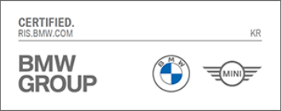
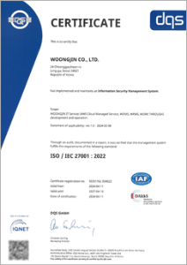
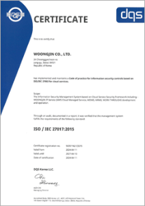

WDMS란?
모빌리티 산업 전 과정을 아우르는 올인원 디지털 플랫폼입니다. 차량 운영·정비·딜러 관리·대고객 서비스를 단일 환경에서 통합 지원합니다. 기업은 서비스 품질과 경쟁력을 강화해 모빌리티 시장 변화를 선도할 수 있습니다.
국내 유일 엔터프라이즈급 모빌리티 특화 솔루션 WDMS
WDMS는 자동차 수입/판매관리, 딜러사 영업/정비관리, 대고객 편의 온라인 서비스, 스마트 모빌리티 생태계 기업을 위한 IT 서비스를 제공합니다. 웅진은 국내에서 유일하게 엔터프라이즈급 모빌리티 솔루션을 제공하고 있으며, 이미 글로벌 대형 기업들로부터 기술력과 안정성을 인정받아 수준 높은 전문성을 제공합니다.


솔루션 구성


글로벌 모빌리티 기업이 인증한 웅진의 IT 솔루션
유수의 글로벌 모빌리티 기업들이 인정한 WDMS는 프로젝트를 성공적으로 완수하며 Mobility 산업 분야에 독보적인 역량을 쌓았습니다. 세계 최고 수준의 IMS / DMS 전문가로 구성된 웅진은 고객의 성공적인 디지털화를 위해 IMS / DMS Best Practice와 Customizing 전략을 제공합니다.
국내유일 IMS/DMS
프로젝트 수행경험
- BMW / MINI / Rolls-Royce 7개 딜러사 213개 지점 OPEN & 운영
- 폭스바겐 / 아우디 17개 딜러사 164개 지점 PROJECT
- 재규어 / 랜드로버 9개 딜러사 23개 지점 PROJECT
- 북경 현대자동차 900개 딜러사 & 인도 현대자동차 1,300개 딜러사 OPEN
- 유럽 기아자동차 14개국 법인 OPEN & 운영
Total IT Service
- DMS, SAP ERP, AWS 국내 유일 자체 구축 기업
- 모든 Legacy System 통합 인터페이스 서비스
고객 전략 맞춤형
- 빅뱅 오픈, 파일럿 딜러오픈 후 전체 딜러 오픈 등 고객사 상황과 디지털화 전략에 맞는 롤아웃 수행
- 세계최초 타 DMS 공급사 Open Migration 세계 최초 성공 경험
Customizable Solution
- 고객사별 형상관리를 위해 Core 영역과 Front-end 영역 이원화 관리
- Front-end 영역은 오직 한 고객만을 위한 비즈니스 요구사항 개발
AI로 더욱 스마트해진 WDMS
WDMS는 모빌리티 정비 이력, 고객 프로필, 캠페인 등 실제 운영 데이터를 기반으로 AI를 접목해 정비·영업·운영 전 과정에서 더 정교한 업무 경험을 제공합니다. 이를 통해 고객 만족도와 비즈니스 성과를 동시에 향상시킵니다.
WDMS AI 주요 기능
01.
정비 업셀링 AI서비스
PROFIT
고객의 모빌리티 정비 이력과 정기 점검 내역, 진행 중인 브랜드 캠페인 정보를 AI가 분석하여 고객 상황에 적합한 정비 항목과 프로모션을 효과적으로 제안할 수 있도록 지원합니다.
Key Functions
- 정비 이력 및 점검 내역 기반 AI 분석
- 진행 중 캠페인 자동 매칭
- 고객별 맞춤 추가 정비 항목 추천
비즈니스 가치
- 고객 니즈에 맞춘 정비 제안으로 매출 확대
- 고객 신뢰도 및 재방문율 증가
02.
디지털 브로슈어
자동 생성 AI 서비스
EXPERIENCE
WDMS 사용자가 AI와의 자연어 대화를 통해 시스템 기능을 쉽게 이해하고 운영 및 교육 부담을 줄이도록 지원하는 지능형 가이드 서비스입니다.
Key Functions
- 고객 프로필 기반 맞춤 콘텐츠 자동 생성
- 프리미엄 디자인 템플릿 자동 적용
- 이메일·메신저를 통한 즉시 공유
비즈니스 가치
- 구매 전환율·시승 예약률 향상
- 고객 경험 기반 비대면 영업 경쟁력 강화
03.
지능형 AI 가이드 서비스
EFFICIENCY
WDMS 사용자가 AI와의 자연어 대화를 통해 시스템 기능을 쉽게 이해하고 운영 및 교육 부담을 줄이도록 지원하는 지능형 가이드 서비스입니다.
Key Functions
- WDMS 메뉴 및 기능 실시간 안내
- 신규 사용자 온보딩 자동화
- 다국어 지원 (한국어, 영어, 일본어)
비즈니스 가치
- 운영 및 교육 비용 절감
- 글로벌 확장 및 빠른 현지화 지원
모빌리티에 최적화된 솔루션 WDMS
WDMS는 사용자의 니즈와 경영자 관점에서 시스템 활용도가 충분히 반영된 모빌리티 특화 솔루션입니다. 해외 시스템 대비 국내 환경에 맞는 UX/UI를 적용해 국내 현장 업무의 편리함과 빠른 업무 처리 중심으로 설계되었으며, 경영진의 명확한 의사결정을 지원할 수 있는 국내 유일 엔터프라이즈급 모빌리티 특화 솔루션입니다.
1.솔루션 특장점
WDMS는 최고의 성능과 높은 유연성으로 빠르게 변화하는 시장에서 경쟁 우위를 확보할 수 있는 가치 있는 기능을 제공합니다.
고객 중심 구성
- 세계 최고 수준의 전문 인력으로 시스템 구축
- 사용자 중심의 UX/UI로 빠른 업무 처리 및 경영진의 명확한 의사결정 지원
인터페이스 표준화
- Importer System, OEM System, Local ERP와 연계 구동 시 유연성 제공
- 모니터링 체계 구축으로 장애 신속 대응, 취약점 보완
- 인터페이스 표준화로 복잡성 제거, 효율성 개선
Core Master Integration
- 주요 마스터의 정교한 통합관리
- 업무 기능을 표준화, 일원화하여신속한 처리 지원
Easy Configuration
- 간단한 조작만으로 사용자별 최적화된 업무 환경 구성
- 국가, 언어, 기업, 브랜드 별 제도 및 정책에 따른 시스템 구성
2. 도입 효과
다양한 업무에 유연하게 대응할 수 있는 최적화된 통합 업무 환경을 통해 운영의 효율성을 확보하고 성과를 개선하여 디지털 경영으로의 성공적인 혁신을 가속화할 수 있습니다.
01
02
03
04
05
06
WDMS, Certified Technology
웅진은 국내 최초로 BMW 그룹 코리아와 독일 본사간의 실시간 정보 교류를 가능하게 한 국내 최초 인증 허가를 보유하고 있으며, 국제 표준 정보보안 관리 및 클라우드 서비스 정보보호 인증을 보유하고 있습니다.
BMW Korea RIS Certification

RIS(Retail Integration Service)
글로벌 통합 센트럴 게이트웨이 허가 자격 요건으로 WDMS는 BMW 그룹 코리아와 독일 본사간의 실시간 정보 교류를 가능하게 하는 국내 최초 인증입니다.국제 표준 보안 인증 ISO 27001 & 27017

ISO 27001
정보보안 관리 시스템에 대한 국제 표준으로 정보보안 분야에서 가장 권위있는 인증입니다. 웅진은 고객의 정보 자산을 효과적으로 관리할 수 있으며, 이를 더욱 안전하게 유지하기 위한 프레임 워크를 제공합니다.
ISO 27017
클라우드 서비스 제공자와 이용 고객이 정보 보호를 위한 시스템 체계를 잘 갖추고 운영하는지를 평가하는 국제 표준 인증으로, 웅진의 클라우드 서비스의 안정성을 입증합니다.WDMS 운영 전략
WDMS의 운영 전담 조직은 시스템의 안정적인 상태를 유지하고 환경 변화에 따른 사용자 요구사항을 반영하기 위해 지속적으로 활동합니다. 또한 정기적인 예방 정비 활동을 통해 장애 요인을 사전에 제거하여 업무 연속성을 확보하고 시스템 가용성을 향상 시킬 수 있도록 지원합니다.


글로벌 기업이 선택한 웅진
독보적인 역량의 IT 솔루션인 WDMS는 유수의 글로벌 기업들과 함께 가치를 만들어 가고 있습니다.
- BMW
- Rolls-Royce
- MINI
- BMW
MOTORRAD - GENESIS
- Volkswagen
- Audi
- LAND ROVER
- LAMBORGHINI
- HYUNDAI
- KIA
- JAGUAR
- 北京现代
- KG MOBILITY
- NEXEN
- Hyundai Capital
- LOTTE Autocare
- ASTON MARTIN
- McLaren

CONTACT CENTER
Tel : 02-2119-1110
E-mail : woongjin@woongjin.com